Final processed image
Final image processed in Adobe Photoshop. Contrast, highlights, shadows and overall visibility were adjusted.
FIELD EXPERIMENT 001
Long exposure light dynamics experiment conducted during camera familiarisation, image-processing practice and preparation for future astrophotography missions.
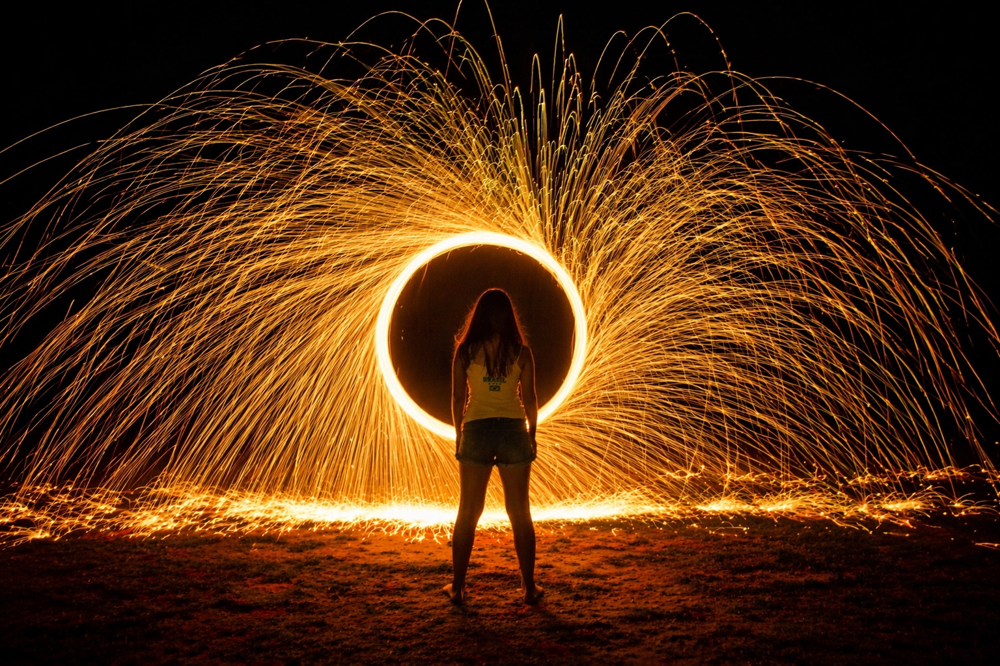
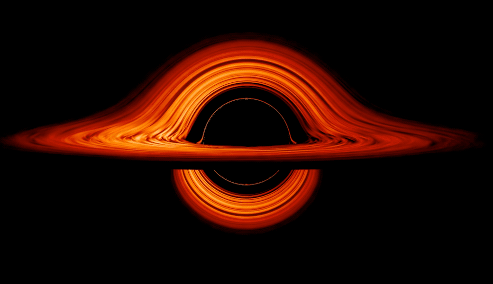
Although this experiment is entirely classical physics, the resulting long-exposure structure visually resembles theoretical black hole accretion disk renderings and gravitational lensing simulations.
NASA visualisations frequently use similar curved light structures to represent matter orbiting near extreme gravitational fields.
Source: NASA — Black Hole Visualization
This field experiment is not part of the main astronomical mission sequence. It belongs to the Home Space Observatory field experiments log: a place for camera tests, physics demonstrations, optical practice and operational learning.
The objective was to practise long exposure photography before the future Polaris camera, tracking systems and signal-monitoring experiments become fully operational.
Final image processed in Adobe Photoshop. Contrast, highlights, shadows and overall visibility were adjusted.
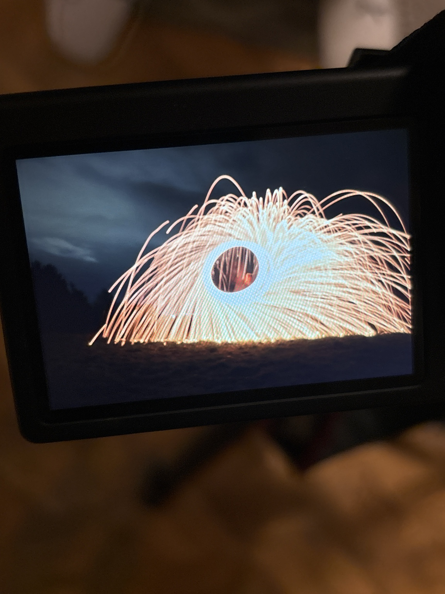
Camera display during the experiment, immediately after one of the successful captures.
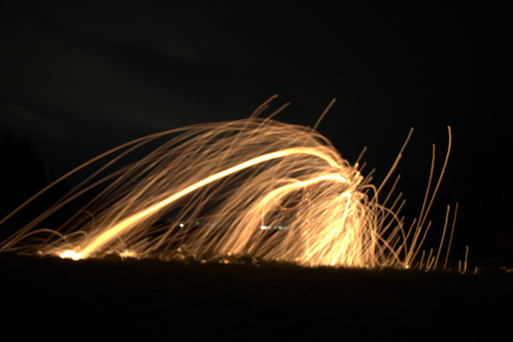
Early experimental frame with strong directional spark arcs.
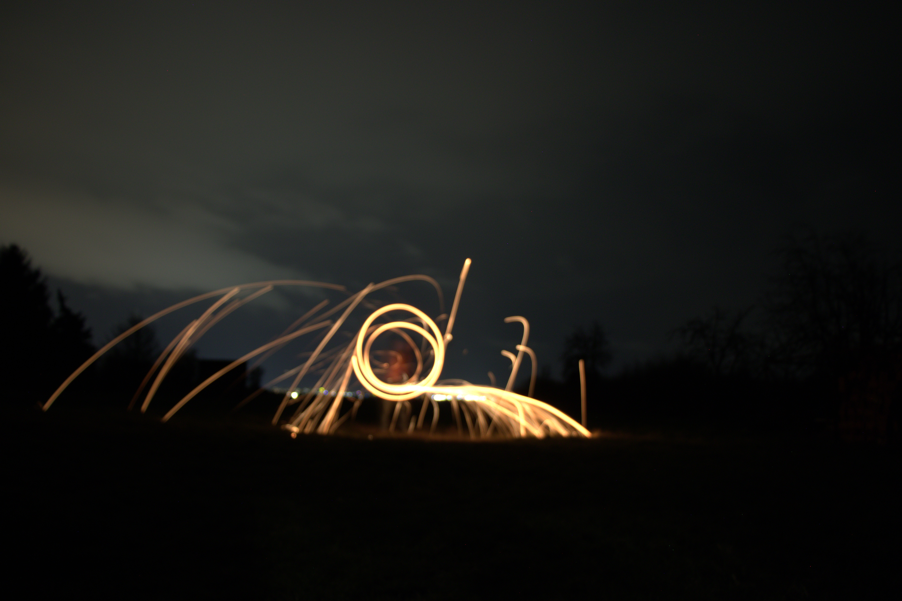
Compact circular light structure with lower rotational arc.
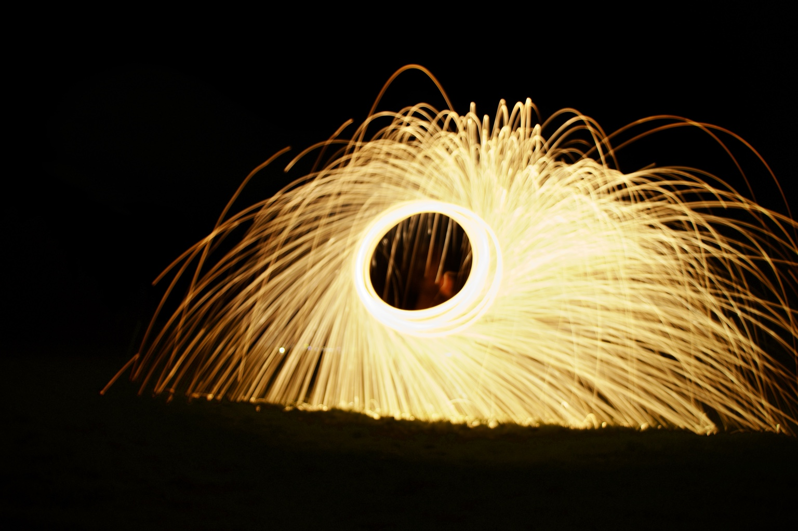
Strong circular symmetry with dense particle emission.
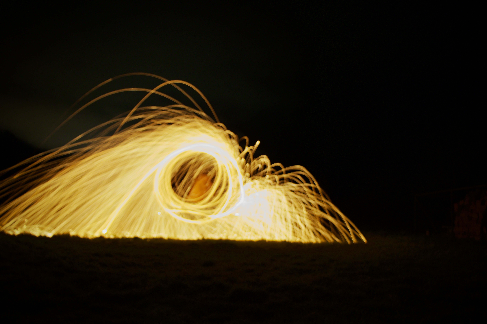
One of the strongest raw-looking field captures before final processing.
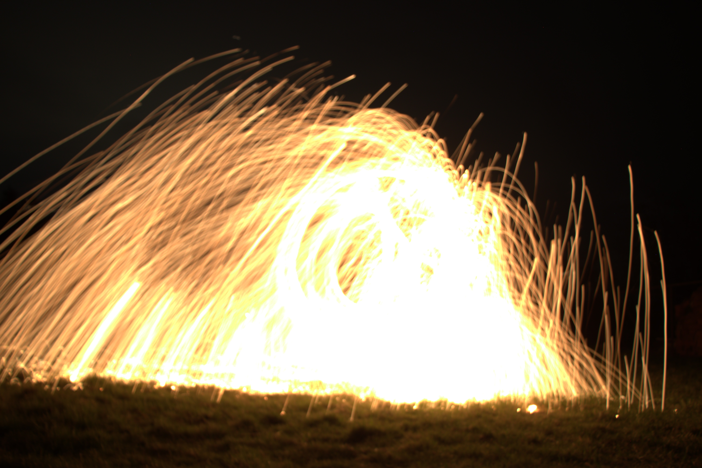
Extremely intense spark emission producing near-solid light regions.
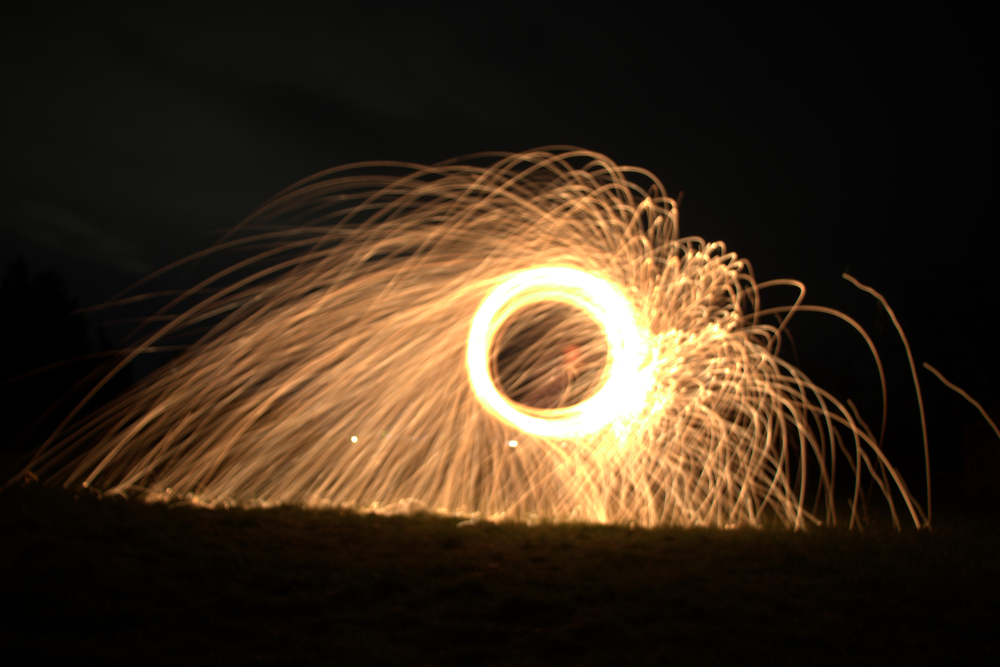
Bright circular structure with asymmetric particle trails.
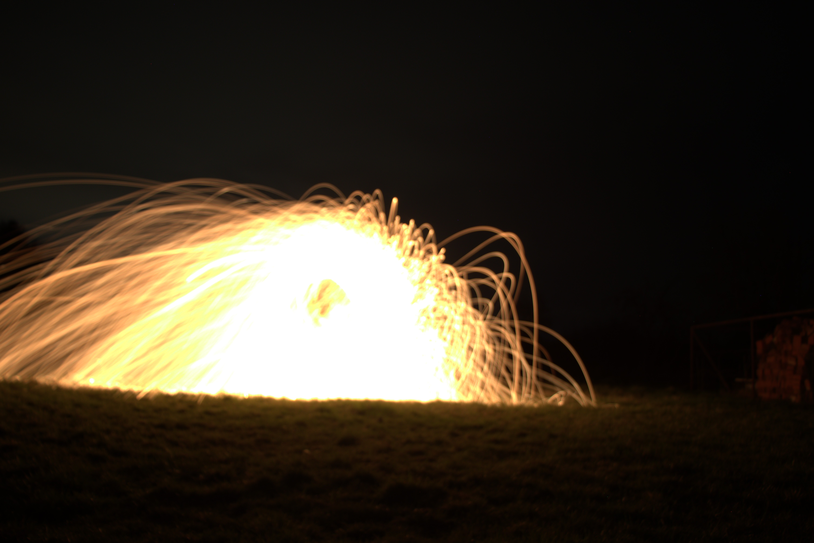
Overexposed ignition phase showing combustion intensity.
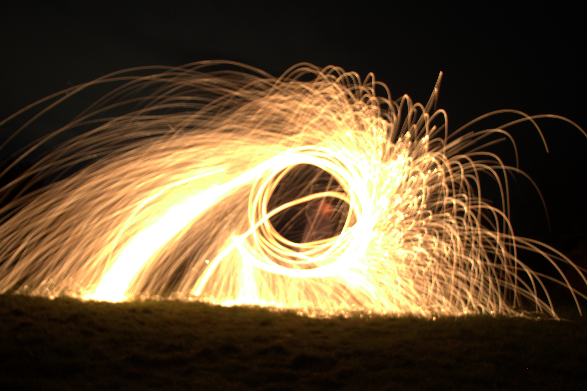
Extended curved spark trails resembling orbital structures.
Name: Classified
Country: Poland
Latitude: Classified
Longitude: Classified
Temperature: n/a
Humidity: n/a
Wind: n/a
Sky condition: Clear
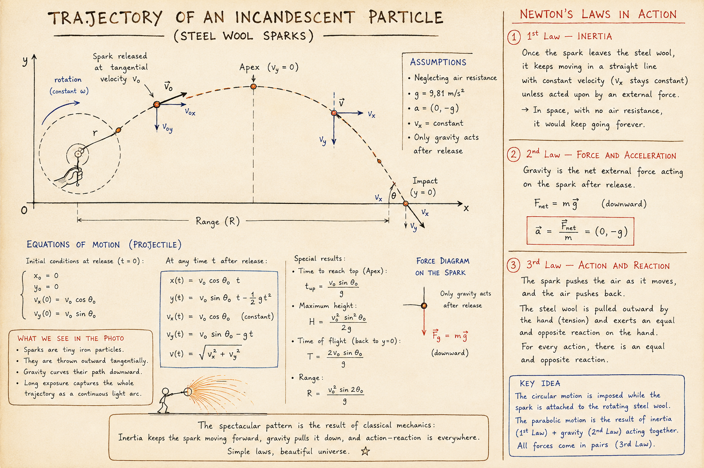
The final image looks similar to an artificial black hole, but the visible trajectories are explained by classical mechanics.
Each incandescent iron particle leaves the rotating steel wool with tangential velocity and then follows a projectile trajectory under gravity.
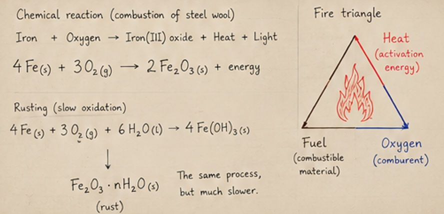
The sparks are small incandescent iron particles created during rapid oxidation of steel wool.
This is essentially accelerated rusting: the same oxidation process, but occurring extremely quickly because of high temperature and increased contact with oxygen.
The combustion triangle is also present: fuel (steel wool), oxygen from the air and activation energy provided by ignition.
This experiment involved real fire, hot sparks and burning metal particles.
During the session, one spark landed on a foot, burned through the sock and burned the skin.
Always use safety goggles, boots or closed footwear, gloves and protective clothing.
The following PDF was created as a mission-style educational leaflet combining photography, physics and chemistry explanations.
Field Experiment 001 successfully validated camera handling, long exposure control and basic post-processing workflow.
It also created a useful bridge between photography, physics, chemistry and future HSO astrophotography work.